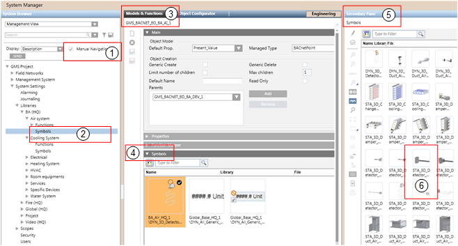
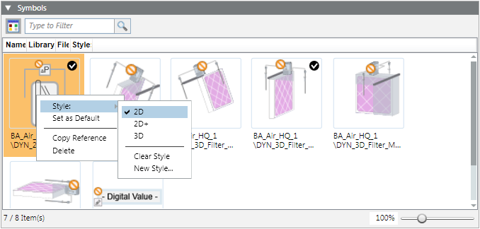

Assigning Graphics / Symbols to an Object Model or Function
You can associate graphics or symbols to models and functions. For background information, see Graphic Templates and Symbols Expanders.
Assign Graphics to an Object Model or Function
- In System Browser, select Project > System Settings > Libraries > [...] > [object model or function].
- In the Models & Functions tab, open the Graphic Templates expander.
- Select the Manual Navigation check box.
- In System Browser, navigate to and select the required Graphic Templates library.
- Right-click the selected Graphic Templates library and select Send to the Secondary pane.
- The Secondary pane opens and displays available graphic templates.
- In the Secondary pane, select the desired graphic template and drag-and-drop it to the Graphic Templates expander.
- Repeat the preceding step for all graphic templates you want to assign to this object model or function.
- Define the default graphic template. Right-click the desired graphic template and select Set as Default.
- Click Save
 .
.
- The graphic templates are assigned to the object model or function.
- The default graphic template is defined.

During graphics engineering the graphic template designated as the default graphic template is dragged and dropped to a data point where the graphic is placed.
Assign Symbols to an Object Model or Function

- In System Browser, select Project > System Settings > Libraries > [...] > [object model or function].
- In the Models & Functions tab, open the Symbols expander.
- Select the Manual Navigation check box.
- In System Browser, select the symbol library you want to use. For example,
Project > System Settings > Libraries > L1-Headquarter > BA > [subsystem] > Symbols. - Right-click the selected symbol library and select the Send to the Secondary pane.
- The Secondary pane opens and displays available symbols.
- In the secondary pane, select the desired symbol and drag-and-drop it to the Symbols expander (left-click and hold).
- Repeat the preceding step for all symbols you want to assign to this object model or function.
- To define the library style, right-click the desired symbol and select Style: > 2D, 2D+ or 3D.
- To define the default symbol for each library style, right-click the desired symbol and select Set as Default.
- Click Save .
- The symbols are assigned to the object model or function.
- The library style is defined for each symbol.
- The default symbol for each library style is defined.

During graphics engineering the symbol designated as the default symbol is dragged-and-dropped to a data point where the graphic is placed.
Delete an Assigned Graphic Template
- In System Browser, select Project > System Settings > Libraries > [...] > [object model or function].
- Select Project > System Settings > Libraries > [object model or function].
- In the Models & Functions tab, open the Graphic Templates expander.
- Select the graphic template for deletion.
- Right-click the graphic template and select Delete.
- Click Save .
- The graphic template is deleted.
Delete Assigned Symbols
- In System Browser, select Project > System Settings > Libraries > [...] > [object model or function].
- In the Models & Functions tab, open the Symbols expander.
- Select the symbol for deletion.
- Right-click the symbol and select Delete.
- Click Save .
- The symbol is deleted.